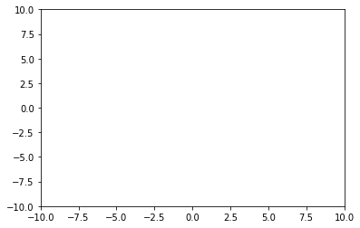
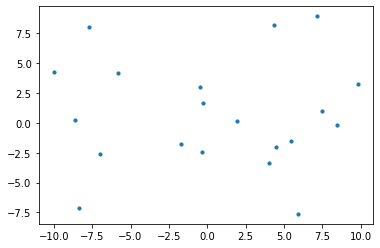
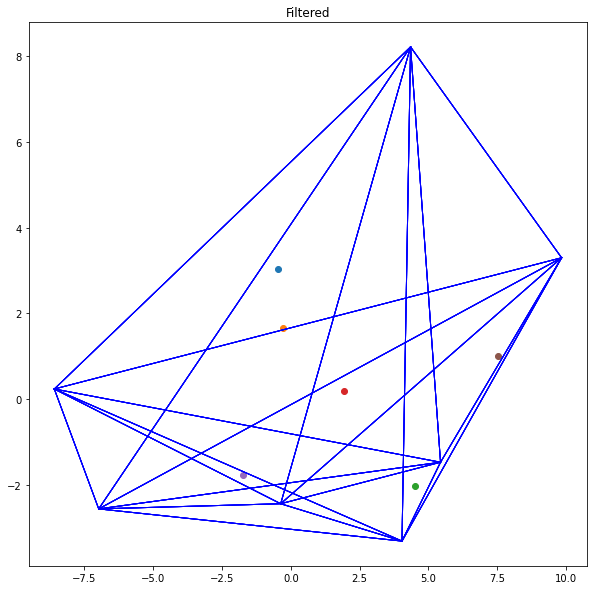
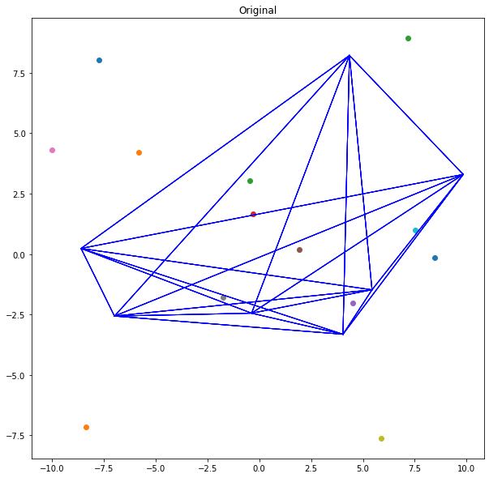

1 ! pip install matplotlib
Requirement already satisfied: matplotlib in f:\software\miniconda3\envs\cg\lib\site-packages (3.3.4)
1 2 import matplotlib.pyplot as pltimport random
1 2 3 4 5 x_list = [random.uniform(-10 , 10 ) for i in range (-10 , 10 )] y_list = [random.uniform(-10 , 10 ) for i in range (-10 , 10 )] for x, y in zip (x_list, y_list): print ("x: " , x, ", y: " , y)
x: 4.039168902596996 , y: -3.3201577215726052
x: 8.459999626479327 , y: -0.13736825068833447
x: -8.342991923279612 , y: -7.1629815679156295
x: -0.36787835718506656 , y: -2.448133980966465
x: -0.4687168346934456 , y: 3.040681358244493
x: -0.28685616430452576 , y: 1.6545115981901226
x: 9.837035515217035 , y: 3.2942306587502763
x: 4.5016481434863 , y: -2.0413345594040377
x: 1.9318082484926524 , y: 0.18651139391879568
x: 4.350205767699428 , y: 8.216285604804607
x: -9.999493760191719 , y: 4.303036544064035
x: -1.7286270125282286 , y: -1.7820149178647036
x: -8.591753322699772 , y: 0.23047966128983788
x: 5.895396308797414 , y: -7.628641617043197
x: 7.509420190645113 , y: 1.003304733473744
x: -6.978923639231656 , y: -2.5683449048039293
x: -7.722623283046808 , y: 8.043854497193191
x: -5.831863423334667 , y: 4.200704989700856
x: 5.439294098013551 , y: -1.479249543919769
x: 7.151000669383279 , y: 8.93879798676696
1 2 3 plt.xlim(-10 , 10 ) plt.ylim(-10 , 10 ) plt.figure(figsize=(600 , 800 ))
<Figure size 43200x57600 with 0 Axes>

<Figure size 43200x57600 with 0 Axes>
1 2 plt.scatter(x_list, y_list, s=10 , marker="o" ) plt.show()

寻找极点（穷举）
选择任意三个不共线的顶点，构成三角形
对所有顶点执行三角形构造
判断每一个顶点（除当前判断三角形外）是否在三角形内，如果在三角形内则排除其是极点，如果顶点不被任何一个三角形包围则证明是极点
1 2 3 4 5 6 7 8 def to_left_test (point1, point2, point3 )-> bool : value = point1[0 ] * (point2[1 ] - point3[1 ]) + point2[0 ] * (point3[1 ] - point1[1 ]) + point3[0 ] * (point1[1 ] - point2[1 ]) if value > 0 : return True else : return False
测试三个顶点是否共线 要判断三个点是否共线，可以通过计算由这三个点形成的向量所构成的行列式的值来实现。如果这三个点共线，那么它们形成的任意两个向量的外积（即叉乘）会是零向量，这等价于这两个向量组成的平行四边形面积为0。对于二维平面上的点来说，这可以通过计算一个特定的2x2矩阵的行列式来完成，或者直接使用一个3x3行列式的方法。
使用行列式判断三点共线 给定三个点 $ P_1(x_1, y_1) $，$ P_2(x_2, y_2) $，和 $ P_3(x_3, y_3) $，这三个点共线的条件是：
这个行列式可以直接展开计算，其结果为：
如果该表达式的值为 0，则说明这三个点 共线 。
1 2 3 4 5 6 7 8 9 10 11 def colinear_test (point1, point2, point3 ) ->bool : value = point1[0 ] * (point2[1 ] - point3[1 ]) + point2[0 ] * (point3[1 ] - point1[1 ]) + point3[0 ] * (point1[1 ] - point2[1 ]) if value == 0 : return True else : return False if False == colinear_test([1 , 0 ], [0 , 1 ], [1 , 1 ]): print ("succeed" ) else : print ("error" )
succeed
1 2 3 4 5 6 7 8 9 10 11 12 13 14 15 16 17 18 19 20 21 22 23 24 import itertoolstriangles = [] point_set = [] generate_triangle_points_x = [] generate_triangle_points_y = [] for index, point in enumerate (zip (x_list, y_list)): if index % 3 == 0 : generate_triangle_points_x.append(point[0 ]) generate_triangle_points_y.append(point[1 ]) else : point_set.append(point) index += 1 points = zip (generate_triangle_points_x, generate_triangle_points_y) for index, triangle in enumerate (itertools.combinations(points, 3 )): triangles.append(triangle) print ("point's size: " , len (x_list))print ("triangle point's size: " , len (generate_triangle_points_x))print ("point_set point's size: " , len (point_set))
point's size: 20
triangle point's size: 7
point_set point's size: 13
1 2 3 4 5 6 7 8 9 10 11 12 13 14 15 16 17 18 19 def draw_triangles_and_points (points, triangles, title ): plt.figure(figsize=(10 , 10 )) plt.title(title) for point in points: plt.scatter(*point) for triangle in triangles: point1 = triangle[0 ] point2 = triangle[1 ] point3 = triangle[2 ] plt.plot([point1[0 ], point2[0 ]], [point1[1 ], point2[1 ]], color="blue" , linewidth=1 ) plt.plot([point1[0 ], point3[0 ]], [point1[1 ], point3[1 ]], color="blue" , linewidth=1 ) plt.plot([point2[0 ], point3[0 ]], [point2[1 ], point3[1 ]], color="blue" , linewidth=1 ) plt.show()
1 2 3 4 5 6 7 8 9 10 11 12 13 14 15 16 17 18 19 20 21 22 23 24 def test_point_in_triangle (point: list , triangle: list ) -> bool : point_1 = triangle[0 ] point_2 = triangle[1 ] point_3 = triangle[2 ] test_result1 = to_left_test(point_1, point_2, point) test_result2 = to_left_test(point_2, point_3, point) test_result3 = to_left_test(point_3, point_1, point) if test_result1 == test_result2 and \ test_result2 == test_result3: return True else : return False def test_point_in_triangles (point: list , triangles ) -> bool : for triangle in triangles: if test_point_in_triangle(point, triangle) == True : return True return False
1 2 3 4 5 6 7 8 9 10 11 draw_list = [] for point in point_set: test_result = test_point_in_triangles(point, triangles) draw_list.append(test_result) draw_points = [point for point, is_draw in zip (point_set, draw_list) if True == is_draw] draw_triangles_and_points(draw_points, triangles, "Filtered" ) draw_triangles_and_points(point_set, triangles, "Original" )

